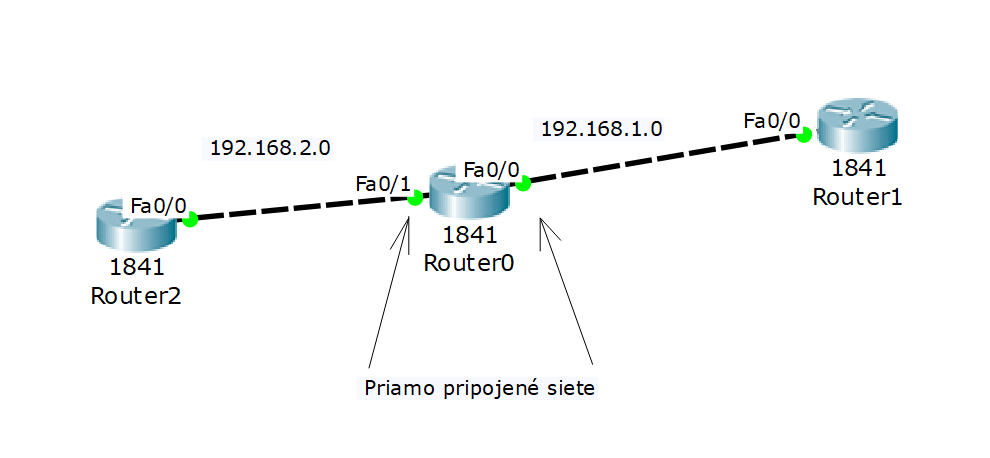

Po vstupe do konfigučného módu zadám jednoduchý príkaz na konfiguráciu ospf protokolu
príkaz router ospf "povie" routru o aký komunikačný protokol sa jedná a pre úspešné spustenie je nutné napiísať aj číslo procesu. Toto číslo identifikuje konfiguráciu a je potrebné pre další proces
Ďalším krokom je informovanie o sieťach v ktoré sú priamo pripojené ku routru, ako príkaz píšeme network a za tým ip adresu siete a jej wild card masku. Pri ospf je podstaté za wild card masku písať aj areu(oblasť) pre ktoré bude dané ospf pracovať. Je podstatné spraviť ospf konfiguráciu na všetých routroch lebo inak prenos packetov nebude možný.
Nastavenie špecifickej priority rozhraniu smerovača. Čím vyššie číslo tým vyššia priorita. Rozsah čísel je od 0 - 255
Redsitribúcia slúži na to aby sa packety vedeli posíelať aj medzi rôznymi komunikačnými protokolmi. Pre ospf sa na koniec konfigurácie susedných sietí píše prikaz na redistribúciu. Pre všetky ostatné protokoly je príkaz rovnaký
eigrp 1komunikačný protokol ktorý chcem prekladať, subnets slúži na preklad
Pri konfigurácií NAT alebo PAT sa nesie do ospf network písať ip adresa, ktorá má slúžiť pre NATko. Ale ak by sme to nijak inak nedefinovali tak by sa nám po konfigurácií nepodarilo pingnúť na router na ktorom je NATko. Preto je nutné to definovať príkazom default-information originate
Ako už bolo spomenuté v ospf poznáme viacero oblastí(area). Pri jednoduchom konfigurovaní používame vždy rovnaké číslo, avšak čo ked máme použiť viacero oblastí. Pri konfigurácií s viacerými oblasťami treba pamätať na to že vždy je nutné mať "main" router, čiže router ktorého interfacy sa budú nachádzať v area 0. Area 0 je totiž základná a vdaka nej vedia zariadenia komunikovať aj medzi viacerými oblasťami, vid na obrázku.